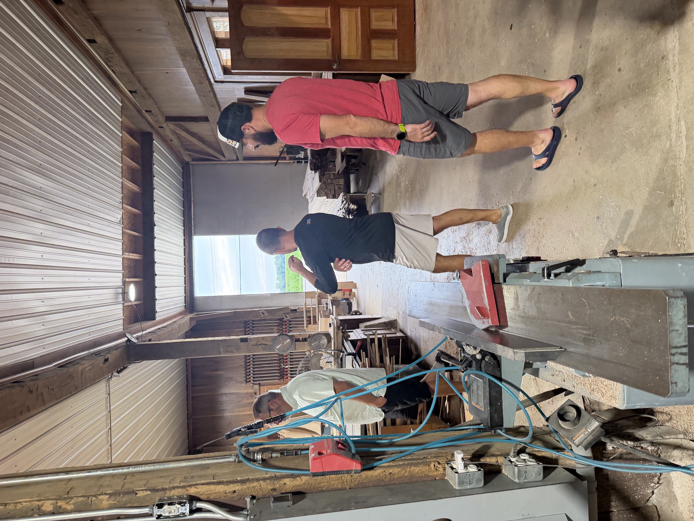
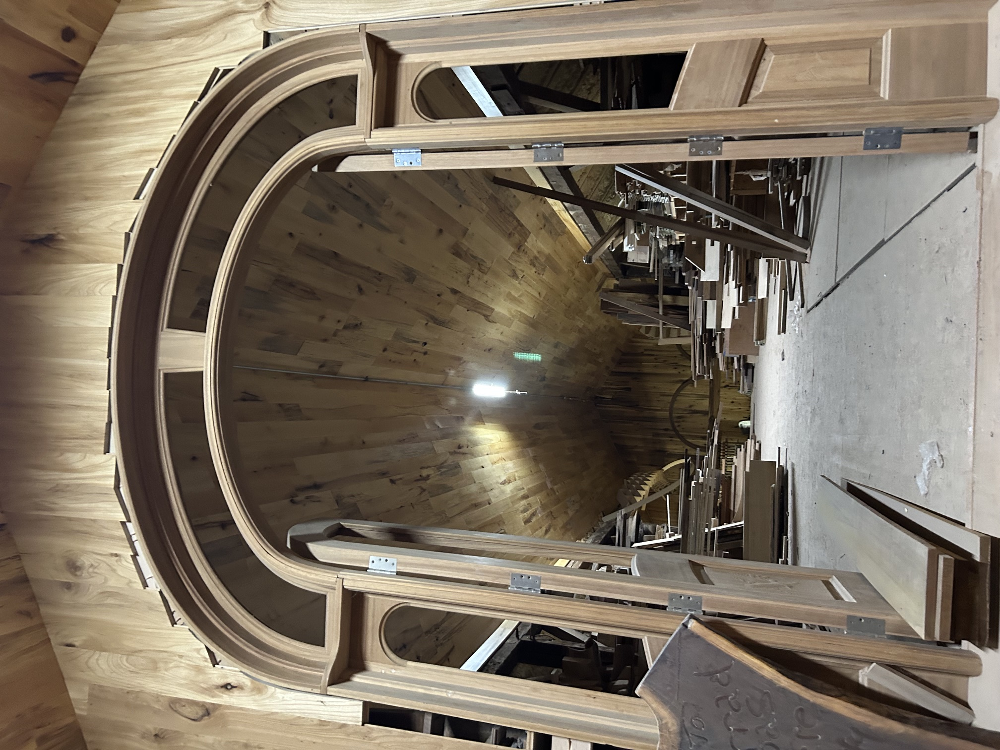
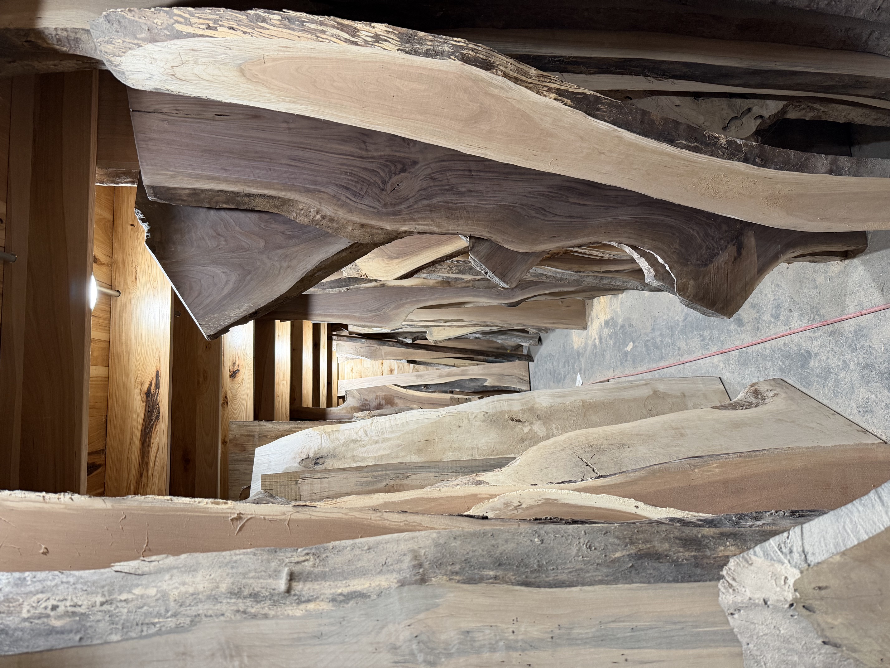
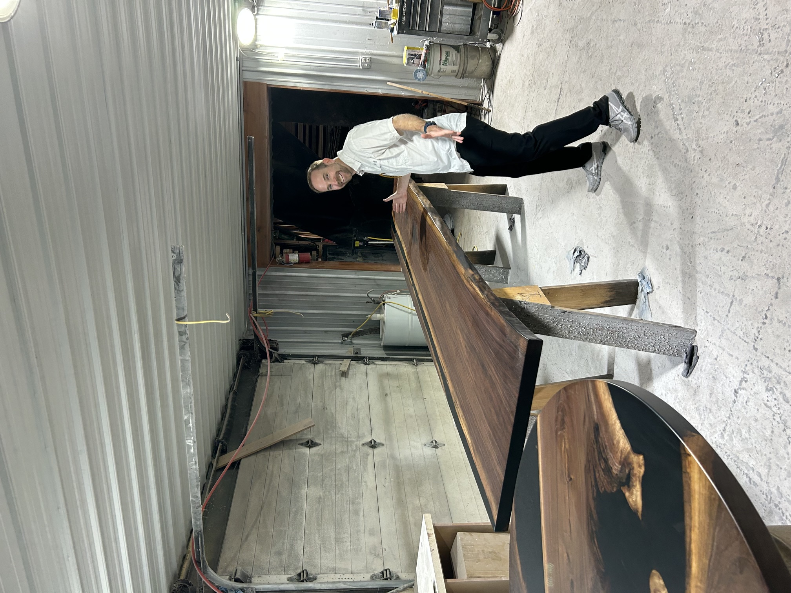
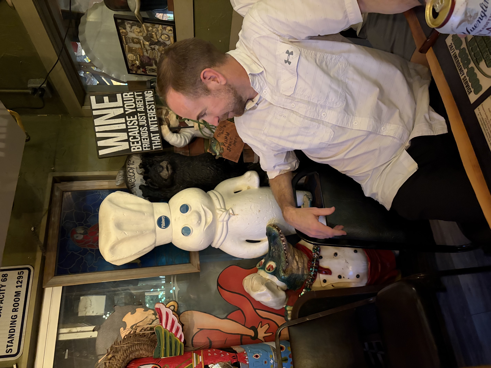

August 2026 • Sandusky, Ohio





For our August gathering, the Dudes went behind the scenes at Decker Woodworking for an up-close look at how raw lumber becomes custom furniture, doors, tables, and other one-of-a-kind pieces.
We walked through the shop, explored stacks of live-edge slabs, saw finished projects, and got a better appreciation for the craftsmanship that goes into taking a piece of wood from rough material to a finished product.
The scale of some of the projects was impressive, from massive tables to detailed custom doors and architectural pieces. As usual, the night was less about becoming experts and more about getting access to something interesting, asking questions, and learning a little along the way.
After the shop tour, the group headed out for food, drinks, and the usual post-event conversation.
🪵 Touring the Decker Woodworking shop
🚪 Seeing custom doors and architectural woodworking
🌳 Exploring stacks of live-edge slabs
🪑 Checking out massive finished tables and custom pieces
🍻 Food, drinks, and conversation afterward
Another successful night of seeing how something is made, meeting the people behind the work, and finding an excuse to get the Dudes together.